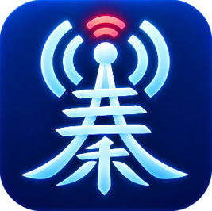
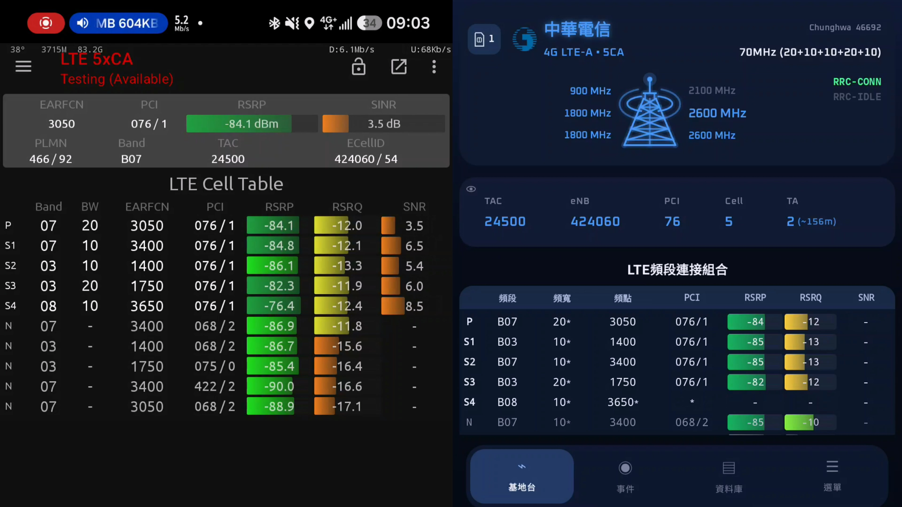
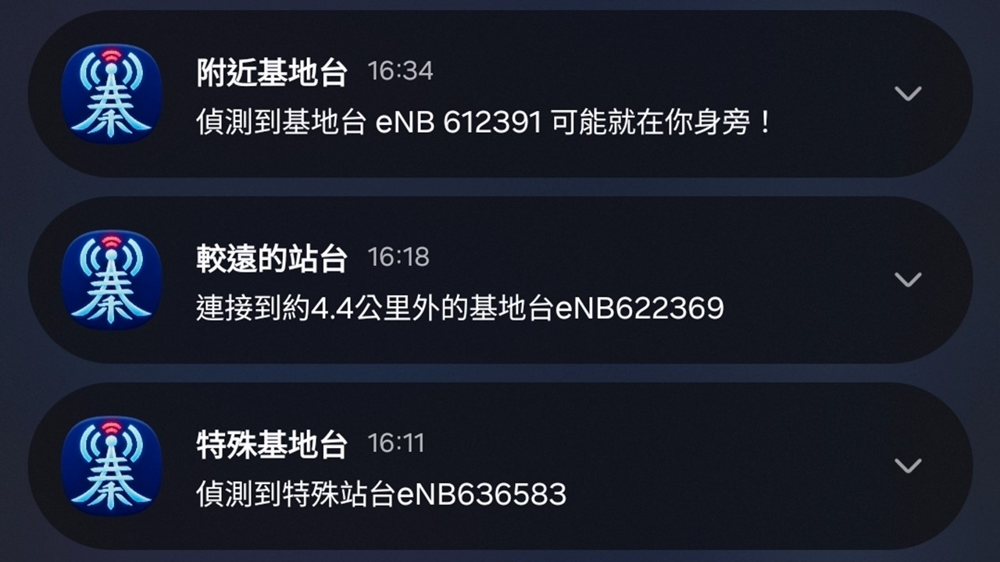

基地台資訊，一目了然
- 醒目的電信業者主題色鐵塔和頻段燈號設計，搭配基地台資訊，連線狀態輕鬆掌握。
- 獨特站台醒目顯示，遇到中華多Cell站台、遠傳eNB+50000，又或者台哥大單頻站，一眼就能辨認出來。
- 支援訊號回放功能，精彩訊號不怕消失！
- 內建站台號碼遮蔽功能，分享截圖也能守住隱私。

Preview
點擊圖片可放大檢視
About the app
愛蓁電信(AiZhen Telecom) 是一款專為台灣三大電信業者打造的行動網路測試App，由愛蓁親自設計，透過AI輔助開發，無論是電信工程師還是行動網路愛好者，都能輕易上手，內建各項實用與驚艷功能，手機無須ROOT就能使用。

